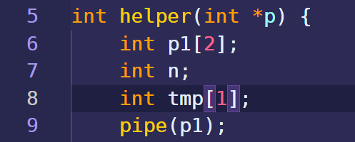
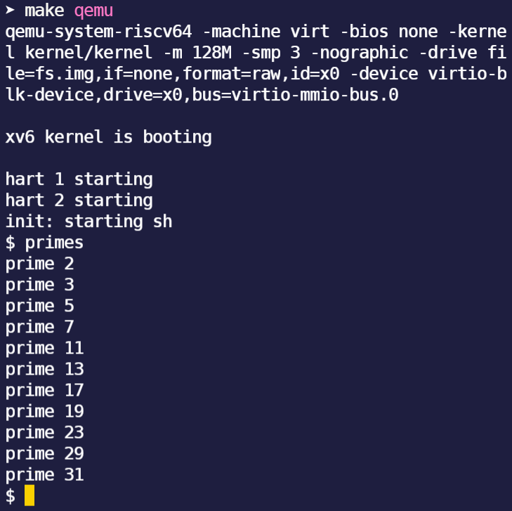
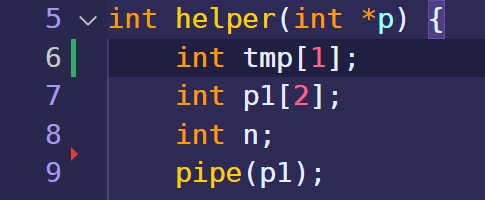
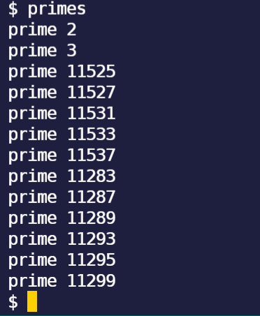

MIT新出的操作系统课，和6.828一样都用xv6，但是对我来说，这个更好做一些。
我用的是ArchLinux，在win10的VMware虚拟机里面安装的。
1
sudo pacman -S riscv64-linux-gnu-binutils riscv64-linux-gnu-gcc riscv64-linux-gnu-gdb qemu-arch-extra
但是，Arch的软件包太新了，尤其是qemu的版本，太新了，所以需要把qemu和依赖的liburing包降级，降级使用downgrade这个软件，qemu降级到5.1版本，liburing到0.7版本。downgrade可以用yay安装。
1
int sleep ( int n ) //Pause for n clock ticks
1
2
3
4
5
6
7
8
9
10
11
12
13
14
15
#include "kernel/types.h"
#include "user/user.h"
int main ( int argc , char const * argv [])
{
/* code */
if ( argc <= 1 ) {
fprintf ( 2 , "error: you must type a number! \n " );
}
else if ( argc == 2 ) {
int number = atoi ( argv [ 1 ]);
sleep ( number );
}
exit ( 0 );
}
代码没啥难度，确实是easy
1
2
3
4
int fork () //Create a process, return child's PID
int pipe ( int p []) //Create a pipe, put read/write file descriptors in p[0] and [1]
int read ( int fd , char * buf , int n ) // Read n byte into buf ; returns number read ; or 0 if end of file
int write ( int fd , char * buf , int n ) // Write n bytes from buf to file descriptor fd ; returns n
这个不像easy啊，不过要是把xv6-book开头几页读一读，也就easy了。主要难度在理解fork上，父进程和子进程得到的是不同的fork返回值，子进程得到的是0，用这个区分两者的代码。
1
2
3
4
5
6
7
8
9
10
11
12
13
14
15
16
17
18
19
20
21
22
23
24
25
26
27
28
29
30
31
32
33
34
35
36
37
38
39
40
41
42
43
44
45
#include "kernel/types.h"
#include "kernel/stat.h"
#include "user/user.h"
int main ( int argc , char const * argv [])
{
/* code */
int p1 [ 2 ];
int p2 [ 2 ];
pipe ( p1 );
pipe ( p2 );
int pid = fork ();
if ( pid > 0 ) {
// printf("current pid: %d\n", getpid());
// printf("parent: child=%d\n", pid);
write ( p1 [ 1 ], "z" , 1 );
char tmp_father [ 1 ];
// read(p1[1], tmp_father, 1);
if ( read ( p2 [ 0 ], tmp_father , 1 ) >= 0 ) {
printf ( "%d: received pong \n " , getpid ());
}
// pid = wait((int *) 0);
// printf("child %d is done\n", pid);
}
else if ( pid == 0 ) {
// sleep(10);
// printf("current pid: %d\n", getpid());
char tmp_child [ 1 ];
// read(p1[0], tmp_child, 1);
if ( read ( p1 [ 0 ], tmp_child , 1 ) >= 0 ) {
printf ( "%d: received ping \n " , getpid ());
}
write ( p2 [ 1 ], tmp_child , 1 );
// printf("child: exiting\n");
exit ( 0 );
}
else {
printf ( "fork error \n " );
}
exit ( 0 );
}
这个程序用到了fork，pipe，wait，read，write，把数据都写入管道之后，要把p[1]给他close，这样read的时候，返回值会变成0，就可以判断出数据到头了。
这个程序废了好大劲才做出来，不过靠自己一个人做出来，忍住不看其他人的方法，是非常有成就感的。
1
2
3
4
5
6
7
8
9
10
11
12
13
14
15
16
17
18
19
20
21
22
23
24
25
26
27
28
29
30
31
32
33
34
35
36
37
38
39
40
41
42
43
44
45
46
47
48
49
50
51
52
53
54
55
56
57
58
59
60
61
#include "kernel/types.h"
#include "kernel/stat.h"
#include "user/user.h"
int helper ( int * p ) {
int p1 [ 2 ];
int n ;
int tmp [ 1 ];
pipe ( p1 );
if ( read ( p [ 0 ], tmp , 1 ) != 0 ) {
n = tmp [ 0 ];
printf ( "prime %d \n " , tmp [ 0 ]);
}
else {
exit ( 0 );
}
while ( read ( p [ 0 ], tmp , 1 ) != 0 ) {
// printf("current pid: %d\n", getpid());
// printf("tmp[i]: %d\n", tmp[0]);
if ( tmp [ 0 ] % n != 0 ) {
write ( p1 [ 1 ], tmp , 1 );
}
}
close ( p [ 0 ]);
close ( p1 [ 1 ]);
if ( fork () == 0 ) {
// sleep(2);
helper ( p1 );
exit ( 0 );
}
else {
// int pid = wait((int *) 0);
// printf("pid %d is done\n", pid);
wait (( int * ) 0 );
exit ( 0 );
}
}
int main ( int argc , char const * argv []) {
/* code */
int p [ 2 ];
pipe ( p );
int ls [ 34 ];
int k = 2 ;
for ( int i = 0 ; i < sizeof ( ls ) / sizeof ( int ); i ++ ) {
ls [ i ] = k ;
k += 1 ;
}
for ( int i = 0 ; i < sizeof ( ls ) / sizeof ( int ); i ++ ) {
write ( p [ 1 ], ls + i , 1 );
}
close ( p [ 1 ]);
helper ( p );
exit ( 0 );
}
在做这个程序期间，发现了一个bug，与C语言的特性相关，C语言变量入栈是和声明顺序一样的，所以先声明的先入栈，所以先入栈的在后入栈的底下，地址更小，取数据的时候是从一个地址往后取，那么取先入栈的变量的数据的时候，就有可能取到后入栈的变量的数据，因为他们内存挨在一块。我遇到的就是一个这样的错误。

程序如上图这么写的时候，结果是：

但是，把变量换一个位置：

输出就变成了这样的：

奥莫昔洛依~